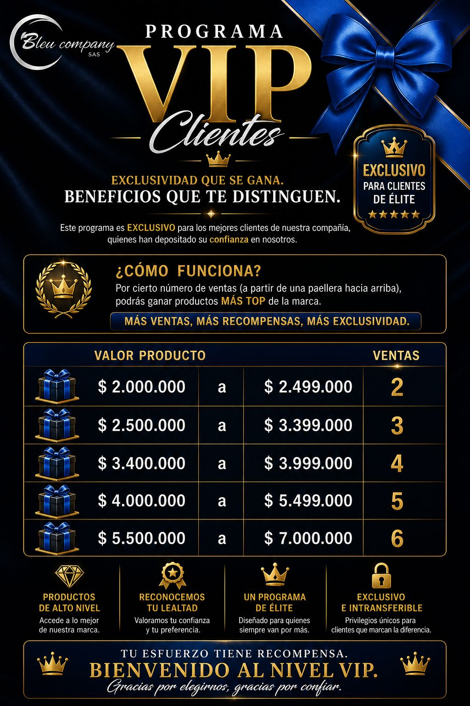

Cuando se domina
La agenda se alimenta de forma orgánica, el mercado mejora y la actividad deja de depender de la suerte.
Territorio Bleu Company SAS
Toda familia tiene a alguien que decide romper el ciclo...
Alguien que deja de sobrevivir para empezar a construir...
Alguien que cambia el “siempre hemos sido así” por un “a partir de hoy será diferente”...
Tal vez esa persona seas TÚ..
Bleu Company existe para quienes tienen el valor de escribir un nuevo capítulo y romper límites que parecían imposibles.
Lo que DIOS comienza en una vida, puede bendecir generaciones enteras..!!
Ingresa los datos y transcribe manualmente los valores en la orden física.
Calcula cuánto le puedes vender a un cliente según la cuota mensual y el plazo elegido.
Calcula el total del cliente y su pago mensual según la tabla de financiación.
Calcula cuántos nombres necesita traer semanalmente según su meta de volumen mensual.
Elige tu siguiente meta y revisa tu progreso con claridad.
Este ascenso se mide únicamente por volumen. Tienes 3 meses para lograr US$20.000 y cada mes debe tener mínimo US$4.000.
Puedes ingresar tu avance como volumen de venta o como compras. Los resultados son aproximados.
Todos los caminos deben conducir a mejorar nuestro 4 en 14.
Cuatrimestre vigente: Mayo, Junio, Julio y Agosto.
Bonificaciones por socios directos nuevos: primera venta y 2% mensual sobre sus ventas.
Reclutamiento, asociación y construcción de equipo.
Busca personas con 3 pilares: trabajadora, humilde de corazón y con ambición sana.
Usa esta guía para abrir conversaciones en frío o durante una demostración.
Convierte las invitaciones en entrevistas y las entrevistas en nuevos socios.
Presentación de apoyo para entrevistas, conversaciones y seguimiento con candidatos.
Asociar no es pedir un favor: es abrirle una puerta a alguien con hambre de crecer.
Academia Bleu
Domina el sistema que mantiene tu negocio en actividad constante.
El 4 en 14 amplía tu base de clientes mediante referencias de calidad. Reduce la dependencia de tocar puertas, trabajar stands o salir a buscar personas en la calle. Quien se vuelve experto en este sistema deja de sufrir por nombres y por actividad.
La actividad es la fuente del negocio. El 4 en 14 es el sistema que la mantiene viva.
Cada paso prepara psicológicamente el siguiente. El sistema pierde poder cuando se omite, se improvisa o se cambia el orden.
Se rompe la preparación emocional del cliente, baja la calidad de los prospectos, se enfría la confianza y el programa pierde efectividad.
El 4 en 14 no es una tarea al final de la demostración. Es un sistema completo de prospección que transforma la confianza de un cliente satisfecho en nuevas visitas de calidad.
La agenda se alimenta de forma orgánica, el mercado mejora y la actividad deja de depender de la suerte.
Se llenan hojas de nombres, pero no agendas; aparecen cancelaciones, malas líneas de mercado y programas muertos.
Alivia el estrés posterior a la negociación y crea una transición humana hacia el programa.
Después de negociar, el cliente puede estar emocionalmente saturado. El puente lo relaja, valida su experiencia y abre nuevamente la conversación desde la confianza.
El programa puede sentirse abrupto, mecánico o como una petición de datos justo después de la venta.
Escucha la respuesta completa. La calificación positiva del cliente será el permiso emocional para avanzar.
El premio no se enumera: se convierte en deseo mediante una historia.
Hacer que el cliente visualice el uso, la emoción y el valor del beneficio antes de explicarle el esfuerzo requerido.
Cuenta casos breves de clientes que ya disfrutaron el premio. Habla de utilidad, experiencia y logro, no solo del precio.
Mostrar el catálogo rápido, sin emoción, o prometer un premio sin explicar las condiciones completas.
Pregunta cuál elegiría y por qué. Cuando el cliente elige, empieza a sentir el premio como propio.
Pedir nombres no es anotar nombres. Anotar llena una hoja; pedir con criterio construye una ruta de ventas.
Las personas suelen ofrecer contactos lejanos porque les da menos pena. Tu labor es guiarlas hacia quienes realmente confían en ellas.
¿Cancelarías con la misma facilidad algo que agendó tu mamá que algo que agendó un compañero de trabajo?
“Señora María, ¿qué le parece si incluimos a su jefe? Le enviaremos un detalle de parte suya para que usted pueda quedar muy bien con él.”
Puedes llenar tu agenda de próximas cancelaciones, prospectos sin perfil y mercados que no valoran tu tiempo.
“Lo entiendo. Justamente por eso no vamos a presionarlos ni a venderles por teléfono. Les ofreceremos una experiencia gratuita y usted decidirá con quién tiene suficiente confianza para compartirla.”
“No necesitamos adivinar quién comprará. Pensemos primero en quién cocina, quién valora la salud, quién disfruta recibir visitas y quién confía en su recomendación.”
Una cita aceptada no siempre es una cita productiva. Calificar protege tu tiempo y mejora tu mercado.
¿Tiene sentido invertir una demostración completa aquí solo porque aceptó recibirte?
Callar por pena y anotar a todo el mundo. Preguntar con respeto es profesionalismo, no indiscreción.
“De todas estas personas, ¿cuál cree que valoraría más esta experiencia y por qué?”
La claridad evita falsas expectativas y convierte al cliente en participante consciente.
Asesor: “Señora María, si su prima compró, ¿cuántos premios se ganó?”
Cliente: “Uno.”
Asesor: “Todavía no. Para completar el programa necesita cuatro visitas y al menos una venta. Si ya tiene la venta, ¿qué le falta?”
Cliente: “Tres visitas.”
El cliente comprende que la venta es una condición, no el programa completo.
Puede pensar que ya ganó con una sola venta y perder motivación para completar las demás visitas.
No es un paso más. Es el momento en el que la confianza se convierte en una cita real.
No necesitas hacer la instantánea perfecta. Necesitas atreverte a hacerla.
Asesor: Señora Andrea, una pregunta: ¿a usted le gustaría que estas personas las visitara yo, que ya me conoce, o una persona desconocida?
Cliente: Pues usted.
Asesor: ¿Por qué?
Cliente: Porque ya confío en usted y ya lo conozco.
Asesor: Perfecto. Lo que pasa es que si yo llevo este programa así como está a la oficina, pasa al centro de telemercadeo y cada visita se asigna al asesor que esté disponible. Para asegurarle que sea yo quien visite a sus familiares más cercanos, tenemos que agendarlos de una vez. Entonces vamos a llamar primero a su tía Carolina.
Hola, mucho gusto. Mi nombre es Christian Prieto. Estoy aquí en la casa de su sobrina Andrea. Acabamos de vivir una experiencia de cocina saludable de los patrocinadores de MasterChef y ella decidió obsequiarle un detalle, además de una experiencia para usted y su familia. Quería saber qué día de esta semana podría recibirnos.
“No se preocupe, no tiene que comprar nada. La idea es llevarle el detalle que le obsequió su familiar y que viva una experiencia totalmente gratuita. Nosotros llevamos todos los ingredientes.”
“Déjese sorprender. Lo importante es que es una experiencia gratuita, sin obligación de compra, y viene de parte de su familiar.”
Entregar datos no es activar. Activar es transferir confianza desde el cliente hacia el prospecto.
La opción más poderosa. Hazla desde la casa, con el cliente presente.
Úsalo cuando no contesten. La voz conserva emoción, cercanía y credibilidad.
Una imagen real valida que la recomendación nace de una experiencia vivida.
Hola, prima. Imagínate que hoy estuvieron en mi casa realizando una experiencia de cocina saludable espectacular. Yo agendé para ti y para tu familia porque sé que les puede fascinar. Es totalmente gratis y además te van a llevar un detalle de mi parte. Por favor, no me lo vayas a negar, porque realmente quiero obsequiártelo. Te van a llamar para coordinar, para que sepas que yo compartí tu contacto.
Mira, hoy estuvieron en mi casa realizando una experiencia de cocina totalmente gratuita. Agendé una también para ti y tu familia. Te van a llamar de mi parte; son personas de mi total confianza.
Los mensajes genéricos no transfieren confianza y suelen ignorarse. Primera opción: llamada. Segunda: voz. Tercera: fotografía real.
Si el cliente no se anima a activar, el programa comienza muerto.
Pulsa comenzar para practicar decisiones rápidas.
Nunca salgas sin intentar la instantánea.
Hoy, mañana o máximo pasado mañana.
No empieces por los tres mejores prospectos.
La seguridad se construye haciendo llamadas, no esperando sentirte listo.
Si uno no responde, pasa al siguiente.
A las 48 horas, el programa necesita una conversación, no silencio.
Mantener al cliente informado, comprometido y acompañado hasta completar la meta.
Esperar que el cliente recuerde el programa y haga seguimiento por iniciativa propia.
“¿Cuál de las cuatro visitas podemos asegurar hoy para acercarnos al premio?”
Un contacto que no respondió no siempre está perdido. Puede necesitar un nuevo momento, canal o recomendador.
Reactivar programas antiguos, reemplazar visitas caídas y recuperar prospectos que mostraron interés.
Cuando una visita no se concreta, un prospecto deja de responder o una temporada baja reduce la actividad.
Tu base de datos se llena de oportunidades incompletas que nunca vuelven a trabajarse.
No abandones un programa sin revisar primero qué nombres pueden sustituirse o reactivarse.
Aquí no vienes a leer. Vienes a practicar decisiones reales, fortalecer tus speeches y convertir los ocho pasos en reflejos.
Cada intento combina una situación diferente del 4 en 14.
Una buena demo depende de un buen 4 en 14. Aquí entrenas diagnóstico, psicología, objeciones, cierres y conducción de la demostración.
El nivel cambia la ambigüedad, la presión y la profundidad de cada caso.
Selecciona un juego y desarrolla criterio comercial con casos progresivos.
Prospección premium
Una experiencia exclusiva para clientes VIP que convierte recomendaciones agendadas en ventas y beneficios de alto nivel.

Moño Azul no lo reemplaza: es un plus estratégico para generar actividad instantánea con clientes VIP, fortalecer la prospección y abrir nuevas oportunidades.
Elige un cliente con perfil VIP y solicita autorización a tu Distribuidor.
Explícale con claridad los beneficios y establece una vigencia máxima de 30 días.
El éxito está en que el cliente coordine directamente las visitas, no solo comparta contactos.
Las visitas no suman. Solo cuentan ventas aprobadas desde una paellera en adelante. Cada venta válida desbloquea o acerca un nuevo nivel de beneficio.
Crea sinergia con el cliente y acompáñalo de forma constante hasta completar el programa.
Envía el reconocimiento premium correspondiente y mantén viva la emoción del programa.
Esta versión no almacena información. Si recargas la página, deberás ingresar los datos nuevamente.
El cliente puede elegir un producto dentro del rango correspondiente al número de ventas aprobadas.
$2.000.000 a $2.499.000
$2.500.000 a $3.399.000
$3.400.000 a $3.999.000
$4.000.000 a $5.499.000
$5.500.000 a $7.000.000
Señor(a), quiero contarle algo que normalmente no presentamos a todos nuestros clientes.
Por la confianza que usted ha depositado en nosotros, existe un programa muy exclusivo llamado Programa Moño Azul, creado para reconocer a clientes que disfrutan recomendar calidad a sus familiares y amigos.
Aquí no buscamos simplemente nombres o teléfonos. Lo valioso es que las personas que usted recomiende vivan nuestra experiencia y que usted mismo nos ayude a coordinar las visitas. Por cada venta aprobada irá desbloqueando beneficios cada vez más exclusivos.
Tendrá hasta 30 días y nosotros lo acompañaremos durante todo el proceso. Usted no estará solo: vamos a construir este logro juntos.
¿Le gustaría que activáramos hoy mismo su Programa Moño Azul?
Muy sencillo: usted nos ayuda a coordinar personas que realmente disfrutarían conocer nuestros productos. Nosotros hacemos la presentación y el acompañamiento. Cada venta aprobada lo acerca a un beneficio superior.
Entre más ventas se logren gracias a sus recomendaciones, podrá elegir productos de mayor valor. Es nuestra manera de agradecer su confianza y reconocer su preferencia.
Para que el programa sea exitoso, lo ideal es que usted nos ayude a coordinar directamente las visitas. Cuando el cliente agenda, la confianza es mayor y las probabilidades de éxito aumentan.
Personaliza el nombre del cliente y de la distribución. Revisa la vista previa y descarga una pieza premium lista para compartir por WhatsApp.
Celebramos el cierre del primer semestre y a quienes convirtieron su constancia en una gran victoria.
Ganadores de la Moto 0 KM
Felicitamos su disciplina, actividad y constancia. Este reconocimiento demuestra que cada venta, cada seguimiento y cada día de trabajo sí cuentan.
Valores aproximados. Tasa usada: US$1 = $3.443,59 COP.
Importante: ingresa únicamente volumen de VENTA PERSONAL. Los ingresos son aproximados según el nivel.
Importante: escribe cuánto quieres ganar en pesos colombianos. Bleu One lo convierte a dólares y calcula el volumen de VENTA PERSONAL aproximado y los nombres necesarios.
Una guía simple para no gastar todo lo que entra y proteger la reinversión del negocio.
Emprendedor: separa el 25% de lo que recibes para generar más demostraciones. JD o Distribuidor: si no tienes salario fijo, toma máximo el 30% para ti y protege el resto para operación, equipo y crecimiento.
Consulta el histórico de Junio y sigue en vivo el avance de Julio 2026.
Julio 2026 está en marcha.
Los Toppers de Julio se actualizarán semanalmente. Por el momento, visualiza y felicita también a los Toppers que cerraron Junio.